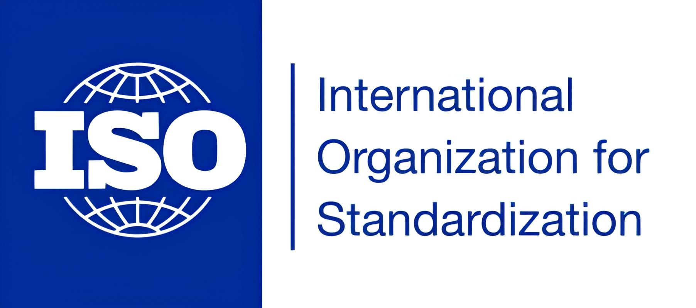
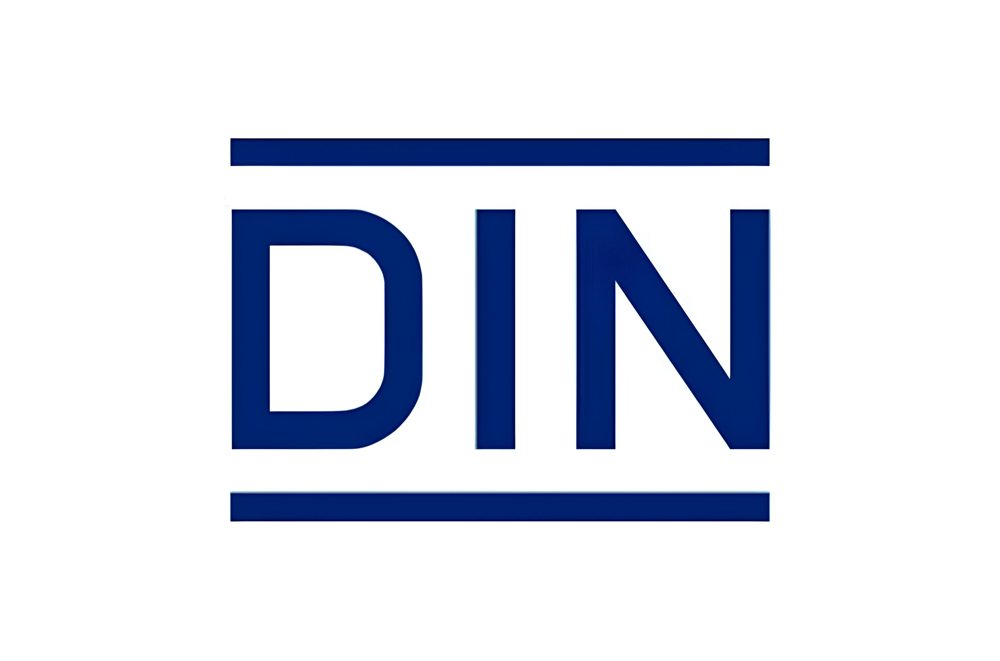
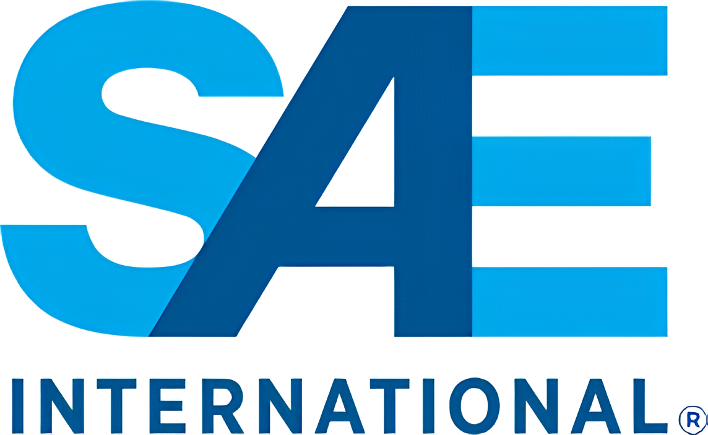

Compromisso com a qualidade e conformidade normativa na SP Flex
A SP Flex cumpre rigorosamente todas as normas e regulamentos do setor. Nossos produtos são desenvolvidos e fabricados seguindo padrões de qualidade que asseguram a segurança e eficiência em diversas aplicações industriais e comerciais. Trabalhamos com uma equipe de técnicos altamente especializados, garantindo que cada produto atenda às especificações técnicas e normativas exigidas.
ISO
As normas ISO são amplamente reconhecidas e utilizadas globalmente para garantir a qualidade, segurança e eficiência dos produtos e serviços. No contexto hidráulico, as normas ISO definem padrões para o desempenho, fabricação e testes de mangueiras hidráulicas.
DIN
As normas DIN são desenvolvidas pelo Instituto Alemão de Normalização e são amplamente utilizadas na Europa. Estas normas cobrem uma ampla gama de produtos e garantem que as mangueiras hidráulicas atendam aos requisitos de qualidade e segurança.
SAE
A SAE (Society of Automotive Engineers) desenvolve normas que são amplamente utilizadas na indústria automotiva, incluindo especificações para mangueiras hidráulicas. Essas normas garantem que as mangueiras possam suportar as pressões e condições exigidas em aplicações automotivas e industriais.